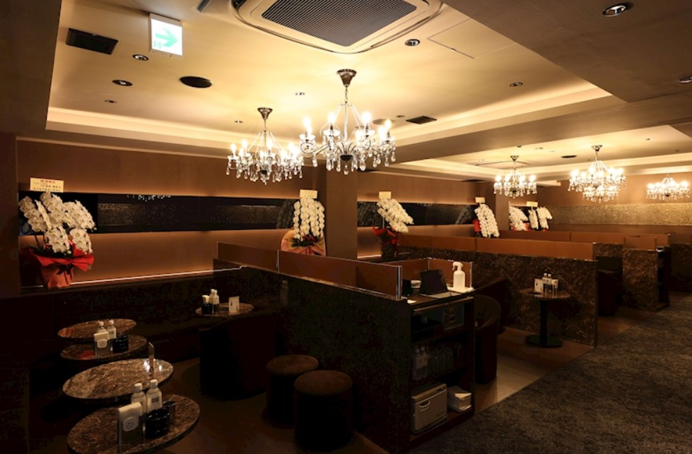
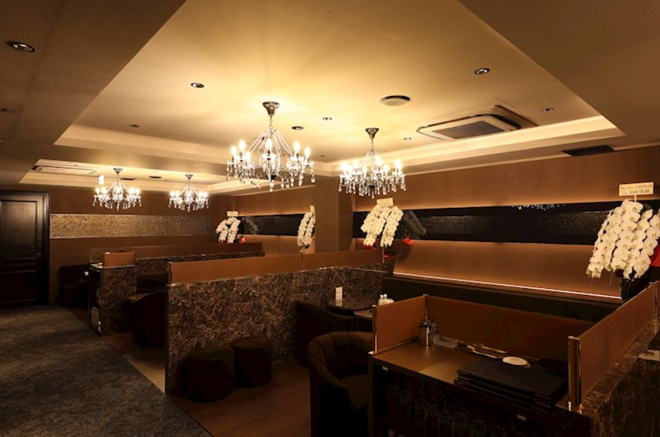
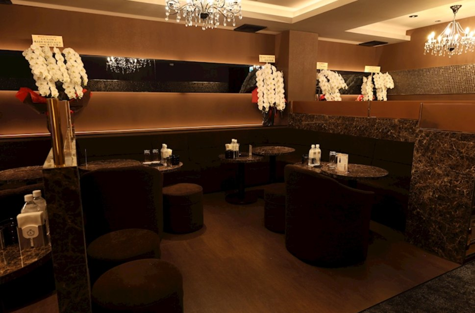
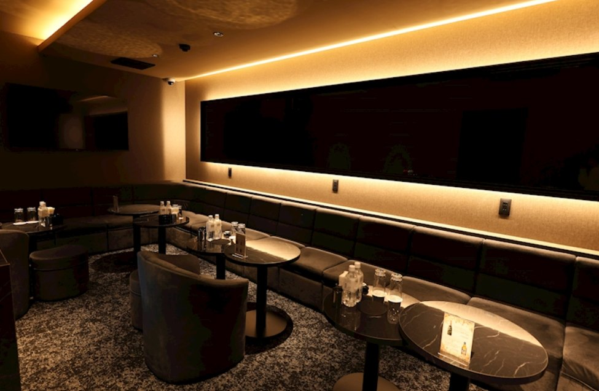
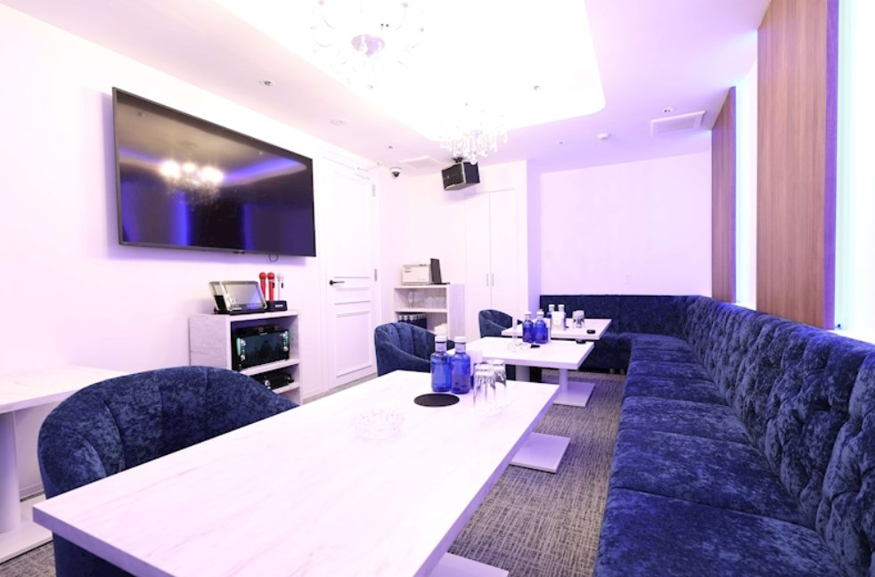

上野で働くなら、まず“お店の広さ”を見て。70坪の「Club LUXOR」
NIGHT STYLE 編集部

上野は、キャバクラが特に多いエリアです。
時給の高さだけでお店を選んで、「待機ばかりで稼げなかった」という声もよく聞きます。
そこで見てほしいのが、お店の広さと席数です。
なぜ「広さ」を見るのか
キャバクラの稼ぎは、どれだけお客様の席につけるかで大きく変わります。席の少ない小さなお店では、同じ時間に出ているキャストの順番がなかなか回ってきません。反対に、席数が多くて、いろいろな使い方ができるお店ほど、お客様を受け入れる力があります。
夜の業界を10年見てきたNIGHT STYLEとして、はじめての人ほど「時給」だけでなく「お客様が入るお店か」を見てほしいと考えています。
LUXORの「広さ」の中身
1. 70坪・テーブル20卓
上野・仲町通り沿いにある、70坪の大型店です。テーブルは20卓。席と席の間にゆとりがあり、お客様と落ち着いて話せます。
2. 使い分けられるフロア
シャンデリアが並ぶ開放的なメインフロアに加えて、カラオケつきのVIPルームが2部屋。おひとりのお客様から団体のお客様まで、いろいろな使い方ができます。
3. 20代が中心
キャストは20〜29歳が中心です。同じ世代の子と、気取らず自然体で働けるお店を目指しています。




Club LUXORってどんなお店？
| 場所 | 東京都台東区上野2丁目（仲町通り沿い） |
|---|---|
| 営業時間 | 20:00〜翌1:00（日曜・祝日定休） |
| 店内 | 70坪・テーブル20卓・VIPルーム2部屋 |
| 衣装 | ドレス・ワンピース |
| お給料 | お店に確認中（時給・バック・保証は、面接で直接確認してください） |
お給料の条件は、まだお店に確認中です。面接では、時給だけでなく「1日に何人くらい出勤しているか」「忙しい曜日と時間帯」も聞いてみてください。広いお店かどうかと合わせて見ると、稼げるかどうかがわかりやすくなります。
まずは、話を聞いてみる
- お店に「NIGHT STYLEを見た」と連絡する
- 面接の日を決める（顔写真付きの身分証明書を持っていく）
- お給料・シフト・衣装の説明を聞いて、納得してから体験入店へ
募集要項・応募はこちらにまとめています。
Club LUXORの求人を見る※この記事は、お店の公開情報をもとにNIGHT STYLE編集部がまとめたものです（2026年11月18日時点）。お給料・勤務条件は、面接のときに必ずお店へ確認してください。NIGHT STYLEは求人情報を掲載する広告媒体です。お仕事の紹介・あっせんは行っていません。